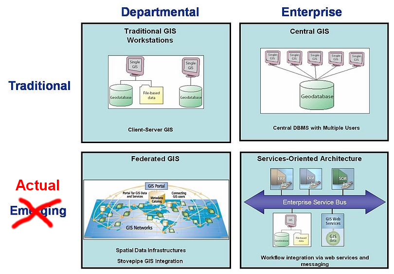

Máster en Tecnologías de la Información Geográfica
Introducción a las aplicaciones web de mapas
Xisco Guaita
Contenido
- Evolución de los GIS
- Servidores geoespaciales
- Revolución del
web mapping
- Factores que influyen en el rendimiento
- Ejemplo aplicación web sencilla
- Presente y futuro del sector geoespacial
Objetivos
- Diferenciar los componentes de una aplicación web de mapas
- Clientes
- Servicios
- Datos
- Conocer los diferentes factores que influyen en el rendimiento de las aplicaciones web geoespaciales
- Descubrir que desarrollar una aplicación informática no es una tarea trivial
Evolución de los GIS
Evolución de los GIS
© ESRI, modificado
Evolución de los GIS
© ESRI
Arquitectura cliente/servidor
Esta arquitectura consiste básicamente en un programa (el cliente) que realiza peticiones a otro programa (el servidor) que le da respuesta

Arquitectura cliente/servidor
- Cliente
- Activo ⇨ Inicia la petición
- Espera y procesa la respuesta
- Presenta la interfaz de usuario (si es necesaria)
- Servidor
- Pasivo ⇨ Espera peticiones
- Procesan la petición y envían la respuesta
- Aceptan peticiones de un gran número de clientes
Arquitectura cliente/servidor GIS
© Boundless
Arquitectura cliente/servidor GIS
© Boundless
Servidores geoespaciales
Servicios de mapas
- Los servicios de mapas generan mapas (imágenes) a petición, según una serie de parámetros: capas visibles, simbología, extensión, proyección, etc
- Generar el mapa implica
- Recuperar la información
- Renderizar la imagen
- Estándares OGC ⇨ WMS
Servicios de mapas
© OpenGeo
Servicios de datos
- Los servicios de datos generan conjuntos de datos espaciales a petición, según una serie de parámetros: capas, filtros, extensión, proyección, etc
- Generar el mapa implica
- Recuperar la información
- Codificar los elementos
- Estándares OGC ⇨ WFS, WCS
Servicios de datos
© OpenGeo
Revolución del web mapping
Google Maps
- Febrero de 2005 beta
- Cambio de concepto
- Escalas predefinidas ⇨ mapas pregenerados ⇨ cachés
- SENCILLO
- Sin herramientas
- Orientado al usuario final NO técnico
Interoperabilidad
- Estándares
- WMS, WFS, GML, KML, GeoJSON...
- Open Geospatial Consortium (OGC, fundado en 1994)

© http://xkcd.com/927
Factores que influyen en el rendimiento
El objetivo de toda aplicación web debe ser mantener la capacidad de respuesta cuando da servicio a gran cantidad de usuarios
Factores a tener en cuenta
- Recursos del servidor (hardware y software)
- Gestión de datos
- Renderizado/codificación
- Procedimientos
- Percepción de rendimiento
- Cachés de mapas
Recursos del servidor
- Hardware
- RAM ⇨ disminuye la E/S (acceso a disco)
- CPU/cores ⇨ mayor concurrencia
- Red (ancho de banda) ⇨ más clientes
- Almacenamiento (disco) ⇨ acceso más rápido a datos
- Software ⇨ configuración óptima!
- Sistema operativo
- Servidor web/aplicaciones
- Servidor de BD
- Servidor geoespacial
Gestión de datos
- Objetivo ⇨ Obtener rápido lo estrictamente necesario
- Datos vectoriales
- Formato nativo/adecuado al servidor de mapas
- Capas pequeñas / estáticas ⇨ ficheros locales
- No reproyectar dinámicamente
- Simplificar geometrías en la BD ⇨ No renderizar detalles indistinguibles
- Crear indices en la BD para filtros y estilos, evitar joins
- Datos ráster
- Imágenes grandes: GeoTIFF tiled, ECW, JPEG2000
- Servidor de imágenes, pirámides
Renderizado
- Control de escalas
- Simbolización sencilla
- Evitar antialiasing ⇨ imágenes 4-6 veces más grandes
- Evitar el etiquetado dinámico ⇨ anotaciones
- Formato de imagen
- JPEG ⇨ ortofotos, mapas base muy complejos
- Muy pequeño
- Formato con pérdida, no admite transparencia
- GIF, PNG8 ⇨ vectores simbolización sencilla, no aliasing
- Pequeño y rápido de codificar (paleta fija)
- PNG24, PNG32 ⇨ vectores con degradados, etc
- Más rápido que PNG8 sin paleta fija
- Mas grande
Codificación elementos geográficos
GeoJSON menos costoso de codificar/decodificar que XML (GML o KML, estándares OGC)
Procedimientos
Programas en cliente y/o servidor
- Buenas prácticas de codificación
- Optimización de código
Percepción de rendimiento
- Clientes teselados ⇨ cuidado, sobrecarga servidor
- Indicadores de proceso/carga
- Cargando capas...
- Generando impresión...
- Tareas asincronas ⇨ poder seguir trabajando
Cachés de mapas
- Por qué generar continuamente imágenes de datos estáticos?
- Imágenes pregeneradas para eliminar el coste de renderizado
© MapProxy
Cachés de mapas
- Pirámide de mallas ⇨ cada nivel corresponde a una escala
- Todas las teselas tienen un tamaño fijo, generalmente 256x256

© ESRI
Cachés de mapas
© ESRI
Estándar OGC ⇨ WMTS
Ejemplo aplicación web sencilla
Incidencias de carreteras
Abrir...
Abrir...
Gestor de incidencias
Localización mediante segmentación lineal
Mapa sincronizado con los formularios

Impresión de listados
Tablas auxiliares ⇨ restricciones
Tablas auxiliares ⇨ tipos
Tablas auxiliares ⇨ correos avisos
Modelo de datos
Ejemplo aplicación GIS sencilla
?

Presente y futuro del sector geoespacial
Formación continua
- Cursos masivos online abiertos (MOOC)
Cloud computing
© www.e-education.psu.edu/cloudGIS/cloud_introduction
Cloud computing
Proyectos de código abierto
- Fundación OSGeo
- Aplicaciones de escritorio ⇨ QGIS, gvSIG...
- Librerías de programación ⇨ gdal/ogr, GeoTools, GeoScript, OpenLayers, Leaflet...
- Bases de datos espaciales ⇨ PostgreSQL/PostGIS, SQLite/SpatiaLite, MongoDB...
- Servidores geoespaciales ⇨ GeoServer, MapServer...
- Servidores de cachés ⇨ GeoWebCache, MapProxy...
- Servidores de catálogos ⇨ GeoNetwork, pycsw...
- Datos geoespaciales ⇨ OpenStreetMap
Global Geospatial Information Management (UN-GGIM)
Informe tendencias del sector (a 5-10 años vista)
- Aumento del uso de software libre
- La información geoespacial (IG) bien público esencial
- La tecnología por delante de los gobiernos y legisladores
- Ganará importancia la IG voluntaria ⇨ OpenStreetMap
- Aumento cantidad IG 3D y 4D, de sensores (IoT), de vehículos aéreos no tripulados (UAV)
- Necesidad de herramientas (y personal especialista) para gestionar Big Data
- Mejoras en el hardware, sobre todo, móvil (smartphones). Posicionamiento en interiores
- Tratamiento de IG mediante procesos automatizados
- Nuevos roles y modelos de negocio para las agencias cartográficas
- ...
Ampliar información
- GIS for Web Developers. Adding Where to Your Web Applications
Scott Davis. The Pragmatic Bookshelf, 2010 - Sistemas de Información Geográfica
Víctor Olaya. wiki.osgeo.org/wiki/Libro_SIG - The Geospatial Desktop
Gary Sherman, Tyler Mitchell. Locate Press, 2012 - Web GIS. Principles and Applications
Pinde Fu, Jiulin Sun. Esri Press, 2010 - OpenStreetMap. Using and Enhancing the Free Map of the World
Frederik Ramm, Jochen Topf. UIT Cambridge Ltd, 2010 - Web Mapping Illustrated. Using Open Source GIS Toolkits
Tyller Mitchell. O'Reilly Media, 2005
"Todo ocurre en algún sitio"